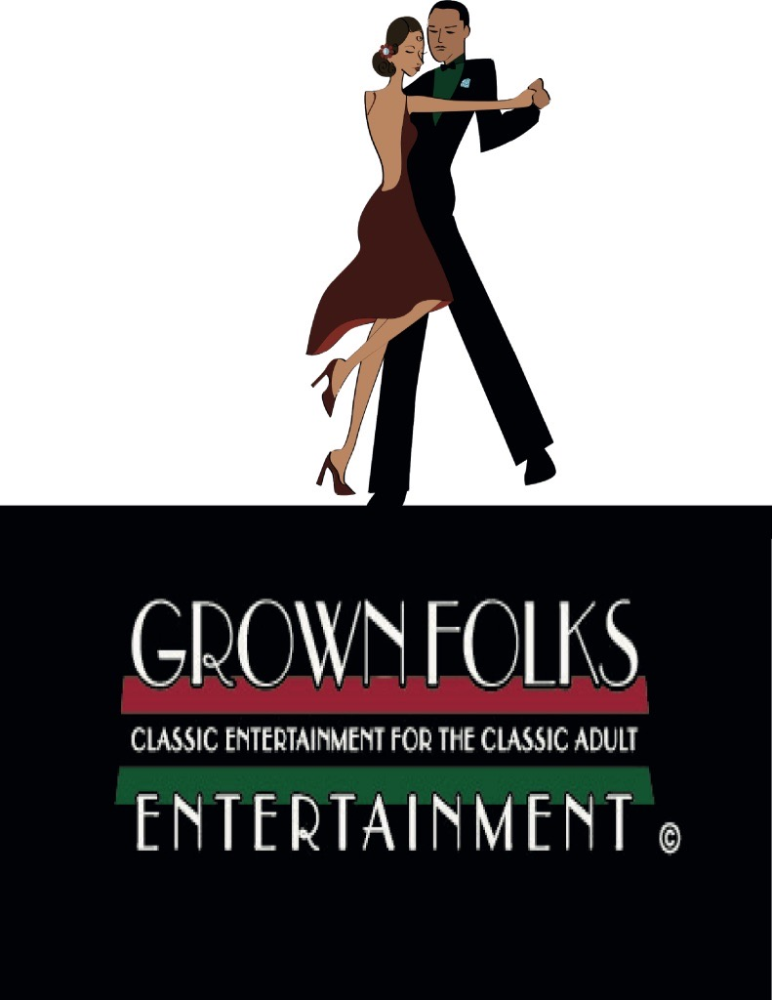
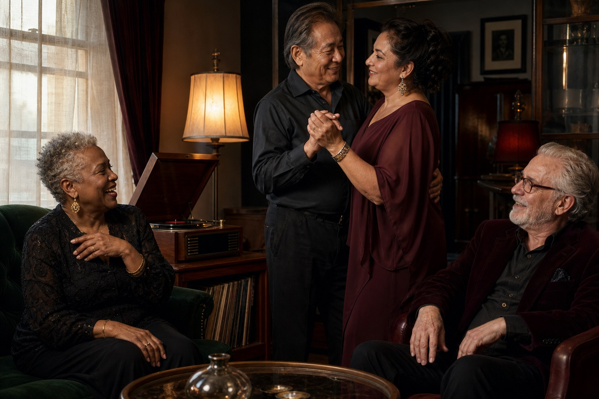

R&B for rooms that listen
Rhythm with history.Nights with soul.
Timeless R&B, deep cuts, and dance-floor favorites for grown folks who still care about the voice, the story, and the way a record makes a room feel.

Classic entertainment for the classic adultSlow jams, soulful grooves, quiet storm, after-hours R&B, and deep cuts.
Take your time
Every part of the night has its own room.
The original experience is now separated into focused pages, so the music, point of view, and story each have space to breathe.
Choose the mood
Velvet hour, Sunday soul, two-step gold, or a midnight drive.
Enter the listening room → 02Know the standard
Selection before volume. Atmosphere before algorithm.
Read our point of view → 03Meet Grown Folks
A home for the listeners, dancers, and songs that never went out of style.
Our story →
Still moving, still listening
The best rooms hold more than one story.
Grown Folks Entertainment celebrates mature listeners across cultures, styles, and generations—because soul has never belonged to only one kind of person.
Read the full storyThe night is still young
Stay for one more song.
Start with a mood. Leave with a record you forgot how much you loved.
Set the mood